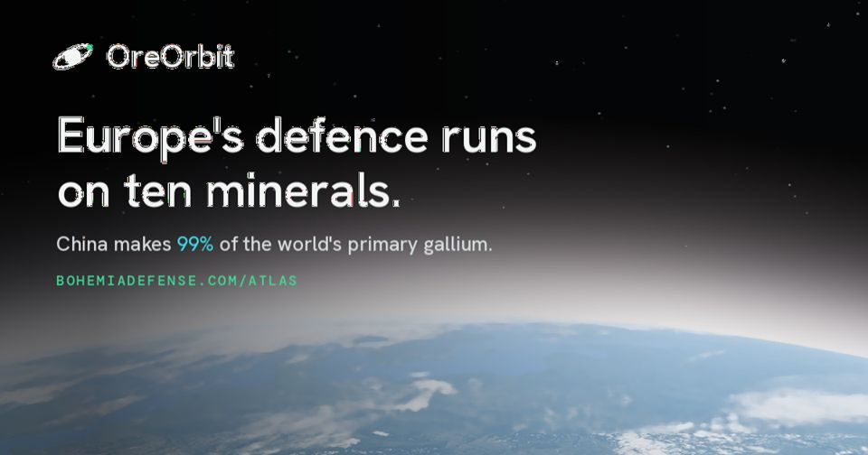

Obrana Evropy stojí na deseti surovinách a u sedmi z nich ovládá Čína alespoň jednu fázi dodavatelského řetězce. Mapuji, odkud tyto suroviny pocházejí, co je přepravuje a co to znamená pro firmy a státy, které na nich závisejí.
Projekty
Bohemia Defense
Nezávislé analýzy evropského obranného průmyslu, bezpečnosti a zahraniční politiky: případové studie o NATO, Ukrajině a Africe s dosahem až 450 000 zobrazení na příspěvek na LinkedInu.
bohemiadefense.comOreOrbit
Bezplatný živý atlas dolů, rafinerií, námořních tras a úzkých míst, na kterých stojí kritické suroviny pro evropský obranný a kosmický průmysl, se satelitními snímky 31 lokalit, zátěžovými testy vývozních kontrol a posouzením dodavatelského řetězce přímo v prohlížeči.

Otevřít atlasV médiích
Čínská služba BBC News mě citovala jako analytika k bezpečnostním aspektům návštěvy tchajwanské viceprezidentky v Praze.
Číst článekZkušenosti
- Ekonomická diplomacie na Ministerstvu zahraničních věcí ČR, kancelář hlavního ekonoma: makroekonomické analýzy a podklady využité ministrem a obchodními delegacemi.
- Exportní poradenství v CzechTrade: založil jsem neformální klastr „Chytrá bezpečnost“ dvanácti firem z bezpečnostního průmyslu z ČR a Evropy.
- Ekonomie a management, VŠEM Praha.
- Kurzy EUSPA (Agentura EU pro kosmický program) o kosmických technologiích a budování kosmického byznysu; kontrarozvědná příprava NATO (ADL 135); OSINT.
Kontakt
Analýzy, posouzení v OreOrbit nebo středoevropské trhy obrany a kosmonautiky. david@madali.cz · LinkedIn